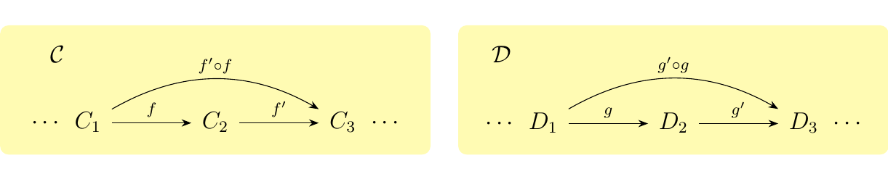

1.3. Category Theory Axioms.
Now we have an understanding of the fact that (1) there is no definitive foundation of mathematics, and therefore that (2) there is no definitive category theory, but rather a definitive set of axioms for categories. We also understand what things might look like under the axioms of category theory.
A category \(\mathcal{C}\) consists of
-
a collection of objects \(\ob(\cc)\)
-
a collection of morphisms between objects; for any objects \(A, B\), we denote the morphisms \(f: A \to B\) from \(A\) to \(B\) as \(\hom_{\cc}(A, B)\)
-
a binary operator \(\circ\) known as composition, such that for any objects \(A, B, C\),
Furthermore, the following laws must be obeyed. \begin{description} \item[(1) Identity.] For each \(A \in \ob(\cc)\), there exists a distinguished morphism, called the identity \(\id_A: A \to A\) in \(\hom(\cc)\). \item[(2) Closed under Composition.] If \(A, B, C\) are objects, then for any \(f \in \hom(A,B)\), \(g \in \hom(B,C)\), there exists a morphism \(h \in \hom(A, C)\) such that \(h = g \circ f\).
\item[(3) Associativity under Composition.] For objects \(A, B, C\) and \(D\) such that
we have the equality
\item[(4) Identity action.] For any \(f \in \hom(\cc)\) where \(f:A \to B\) we have that
\end{description}
At this point, the reader is assumed to have never seen a category or has at least some vague idea. Therefore, any reasonable person would next introduce examples to clarify the above abstract nonsense. There are two types of examples we can introduce: abstract and concrete examples. We first introduce the three canonical examples, then three abstract examples. In the next section we introduce a barrage of more complicated, but real examples of categories in mathematics. The reader is at liberty to read the next two sections in order, in reverse, or she can skip back and forth between them.
Here we make a comment on notation. In what follows we are going to have to describe categories. To describe them, we need to tell the reader (1) what the objects are (2) what the morphisms are and (3) what composition is. Often times, (3) is implicit. Therefore our preferred format of describing an arbitrary category \(\cc\) is using a bold-faced list. An example:
This is simply to avoid a lot of unnecessary words to describe a category (e.g. ''the objects of this category are... the morphisms of this category are...'').
The canonical example of a category is the category of sets, denoted as \(\Set\), which we can describe as \begin{description} \item[Objects.] All sets \(X\).\footnote{There's a minor issue with saying this. We will address it, but not for now.} \item[Morphisms.] All functions between sets \(f: X \to Y\). \end{description} Because most of mathematics is based in set theory, we shall see that while this is a fairly simple category, it is one of the most useful.
A tip moving forward: When dealing with any abstract construction, it is a common strategy to keep a "canonical example" of such an abstract construction in your head. For many people, they often use \(\Set\) as the image in their head when they imagine a category. This is fine, but one should be cautioned: in general, categorical objects are not sets. Furthemore, morphisms are in general not functions. This might be strange, but you will get used to it and it will eventually become natural to you. The moral of the story is: \begin{center} \begin{minipage}{0.7\textwidth} \textcolor{NavyBlue}{The canonical example of a category is \(\Set\), but in general the objects of an arbitrary category \(\cc\) are not sets, and the morphisms are not functions. } \end{minipage} \end{center}
The second canonical example is the category of groups, denoted
as \(\grp\). This can be described as
\begin{description}
\item[Objects.] All groups \((G, \cdot)\). Here, \(\cdot: G \times G \to G\) is the group operation.
\item[Morphisms.] All group homomorphisms \(\phi: (G, \cdot) \to (H, \cdot)\).
Specifically, set functions \(\phi: G \to H\) where \(\phi(g \cdot g') = \phi(g)\cdot \phi(g')\).
\end{description}
We again check this satisfies the axioms of a category.
\begin{description}
\item[(1)] Each group \((G, \cdot)\) has a identity group homomorphism \(\id_G: (G, \cdot) \to (G, \cdot)\) where
\(\id_G(g) = g\).
\item[(2)] The function composition of two group homomorphisms \(\phi: (G, \cdot) \to (H, \cdot)\) and \(\psi: (H, \cdot) \to (K, \cdot)\)
is again a group homomorphism where \((\psi \circ \phi)(g) = \psi(\phi(g))\). This is because
\item[(3)] Function composition is associative; therefore, composition of group homomorphisms is associative. \item[(4)] If \(\phi: (G, \cdot) \to (H, \cdot)\) is a group homomorphism, then \(\id_H \circ \phi = \phi \circ \id_G = \phi\). \end{description} Therefore we see that this is a category. We will later see that this category possesses many convenient and interesting properties.
The third canonical example is the category of topological spaces,
denoted \(\top\). We describe this as
\begin{description}
\item[Objects.] All topological spaces \((X, \tau)\) where \(\tau\) is a topology on the set \(X\).
\item[Morphisms.] All continuous functions \(f: (X, \tau) \to (Y, \tau')\).
\end{description}
The reader can show that this too satisfies the axioms of a category.
We now consider some abstract examples. While abstract, they are nevertheless important examples in their own right. They also illustrate that categories can be finite, which may counter the intuition the reader might have of categories being "infinte."
In this example we introduce the three most basic categorical structures. The first, and most important of the three, is the single object or initial category \(\bm{1}\), which is the category where: \begin{description} \item[Objects.] A single object, abstractly denoted as \(\bullet\). \item[Morphisms.] A single identity morphism \(\id_{\bullet}: \bullet \to \bullet\). \end{description} The identity of \(\bullet\) does not matter; it is an abstract object. This is similar to how a one point set is denoted as \(\{*\}\) and we don't really care what \(*\) is. \
The second category is the arrow category, denoted as \(\bm{2}\), which we can describe as \begin{description} \item[Objects.] Two objects \(\textcolor{NavyBlue}{\bullet}\) and \(\textcolor{Orange}{\bullet}\) \item[Morphisms.] Two identity morphisms $\id_{\textcolor{NavyBlue}{\bullet}}: \textcolor{NavyBlue}{\bullet} \to \textcolor{NavyBlue}{\bullet} $ and \(\id_{\textcolor{Orange}{\bullet} }: \textcolor{Orange}{\bullet} \to \textcolor{Orange}{\bullet}\) and one nontrivial morphism \(f: \textcolor{NavyBlue}{\bullet} \to \textcolor{Orange}{\bullet}\). \end{description} Here we color our abstract objects to clarify that these objects are distinct. \ Finally, we have the category triangle category, denoted as \(\bm{3}\), which can be describe as \begin{description} \item[Objects.] Three distinct objects \(\textcolor{NavyBlue}{\bullet}, \textcolor{Orange}{\bullet}, \textcolor{Purple}{\bullet}\) \item[Morphisms.] Three identity morphisms, and three nontrivial morphisms: \(f: \textcolor{NavyBlue}{\bullet} \to \textcolor{Purple}{\bullet}\), \(g: \textcolor{Purple}{\bullet} \to \textcolor{Orange}{\bullet}\) and \(h: \textcolor{NavyBlue}{\bullet} \to \textcolor{Orange}{\bullet}\). \end{description} In this category, we define \(h = g \circ f\) so that this is closed under composition. Note that if we did not include the existence of \(h\), then this would not be closed under composition, and hence it would not even be a category.
We can picture all three categories as below.
Our first step in category theory has been introducing the axioms and showing some simple examples. We now take our second step by moving on to more basic concepts of category theory by making a few comments about categories.
Let \(\cc\) be a category. We say that \(\cc\) is
-
Finite if there are only finitely many objects and finitely many morphisms.
-
Locally Finite if, for every pair of objects \(A, B\), the set \(\hom_{\cc}(A, B)\) is finite.
-
Small if the collection of objects and collections of morphisms assemble into a set.
-
Locally Small if \(\hom_{\cc}(A, B)\) is a set for every pair of objects \(A, B\).
-
Large if \(\cc\) is not locally small. That is, the objects and morphisms do not form a set.
Such terminology proves to be useful, since we have seen that categories come in different sizes. For example, the categories \(\bm{1}, \bm{2},\) and \(\bm{3}\) are finite categories. However, recall Russel's Paradox, so that the collection of all sets is not a set. Therefore, \(\Set\) is a large category.
We now introduce the concept of a subcategory, which is also extremely useful to include in our vocabularly.
Let \(\cc\) be a category. We say a category \(\mathcal{S}\) is a subcategory of \(\cc\)
if
\begin{description}
\item[(1)] \(\ss\) is a category, with composition the same as \(\cc\)
\item[(2)] The objects and morphisms of \(\ss\) are contained in the collection of objects
and morphisms of \(\cc\).
\end{description}
Furthermore, we say \(\ss\) is a full subcategory if we additionally have that
\begin{description}
\item[(3)] For each pair of objects \(A, B \in \ss\), we have that \(\hom_{\ss}(A, B) = \hom_{\cc}(A, B)\).
\end{description}
More informally, \(\ss\) is full if it "contains all of its morphisms."
Let \(\ab\) be the category described as
\begin{description}
\item[Objects.] All abelian groups \((G, \cdot)\)
\item[Morphisms.] Group homomorphisms.
\end{description}
Then \(\ab\) is a subcategory of \(\grp\). Futhermore, \(\ab\)
is a full subcategory of \(\grp\). This observation also applies to
-
FinGrp, the category of finite groups
-
FindAb, the category finite abelian groups
-
\(\ab_{\text{TF}}\), the category of torsion-free abelian groups
However, none of these categories are subcategories of \(\Set\). In fact, many categories which are based in set theory are not actually subcategories of \(\Set\). This is because the objects of categories such as \(\grp\) or \(\top\) are not just sets, but are sets with extra data (such as a binary operation or a topology).
Let \(\ring\) be the category described as \begin{description} \item[Objects.] Unital rings \((R, +, \cdot)\). That is, rings \(R\) with a multiplicative identity 1 that is not equal to its additive identity 0. \item[Morphisms.] (Unit preserving) Ring homomorphisms \(\phi: R \to R'\). That is, functions \(\phi: R \to R'\) such that
-
\(\phi(a + b) = \phi(a) + \phi(b)\)
-
\(\phi(a \cdot b) \phi(a) \cdot \phi(b)\)
-
\(\phi(0_R) = 0_{R'}\) and \(\phi(1_R) = 1_{R'}\).
\end{description} For a ring \(R\) we know that \((R, +)\) is an abelian group, and we know that every ring homomorphism is technically a group homomorphism between abelian groups. However, it is not the case that \(\ab\) is a subcategory of \(\ring\). This is because while every ring is technically an abelian group, abelian groups on their own are not rings.
We now introduce a convenient categorical construction which will serve to be useful to us from here on out.
Let \(\cc, \dd\) be categories. Then we can form the product category where
we have that
\begin{description}
\item[Objects.] Pairs \((C, D)\) with \(C \in \cc\) and \(D \in \dd\).
\item[Morphisms.] Pairs \((f, g)\) where \(f: C \to C'\) and \(g: D \to D'\) are morphisms in \(\cc\) and \(\dd\).
\end{description}
To define composition in this category, suppose we have composable morphisms in \(\cc\)
and \(\dd\) as below.
 Then the morphisms \((f, g)\) and \((f', g')\) in \(\cc \times \dd\) are composable too, and their composition is defined as \((f', g') \circ (f , g) = ( f' \circ f, g' \circ g)\).

Note that we can form even larger products of categories; we don't have to stop at two! But this will be explored later. For now, we can just be happy with this new tool because it allows us to be build new categories from the old ones that we already know.
A useful example of a product involves the category \(\Set\times\Set\) which we can describe as \begin{description} \item[Objects.] Pairs of sets \((X, Y)\). \item[Morphisms.] Pairs of functions \((f, g)\). \end{description} Such product constructions are useful because in general, algebraic operations of any kind require a product. For example, to talk about a group \((G, \cdot)\), one needs a binary operator, i.e. a function \(\cdot: G \times G \to G\). Hence to talk to generalize operations on categories, we need to talk about products. For example, with \(\Set\times\Set\), we can talk about the product of two sets as a mapping \(\times: \Set \times \Set \to \Set\) where \((A, B) \mapsto A \times B\).